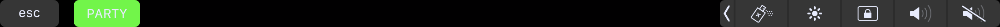
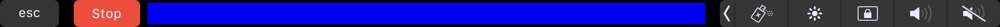

Touch Bar App
An app for the Mac Touchbar by Dylan
FunPlease do not use this if this will harm you or anyone else in any way.
- When you quit the app, you must fully quit it, by going to the icon in the bottom bar. Otherwise it won't start.
- The application only works whilst the window is active, its not really my fault - apple places restrictions.
About
The touch bar app randomly spams colors on your touchbar after clicking the "Party" button. You can stop the flashing colors by pressing the "Stop" button.
Below you can see the start button as it appears on the touchbar:

Here is what it looks like in action, There is a bar of color which changes rapidly:

I made this app, because I thought that the touchbar is really under-used and there is hardly ever any colors on the touchbar. I then thought, why not make something cool that I would use, and then share it with others. In the future I will be looking to make the app customiseable with editable color lists as well as fixing up the few issues. I would also love to make it that it is permanent to the touchbar so that when you aren't activly on the window you can still use it. I can't really see any way around this though as Apple has made it that each application has access to the middle area of the touchbar only whilst active.
Downloading Instructions: To download, click the download button. Once you have downloaded, the file should be called "touchBar.zip". Locate the file in your downloads floder and un-zip it (double click it). Once you have extracted the file called Touch Bar Test, drag it to your desktop. Double click it to run and a window should appear. On your touchbar there should now be a "Party" button. WHEN CLOSING THE APPLICATION ensure that you fully quit it, or upon re-opening the application it will not open!